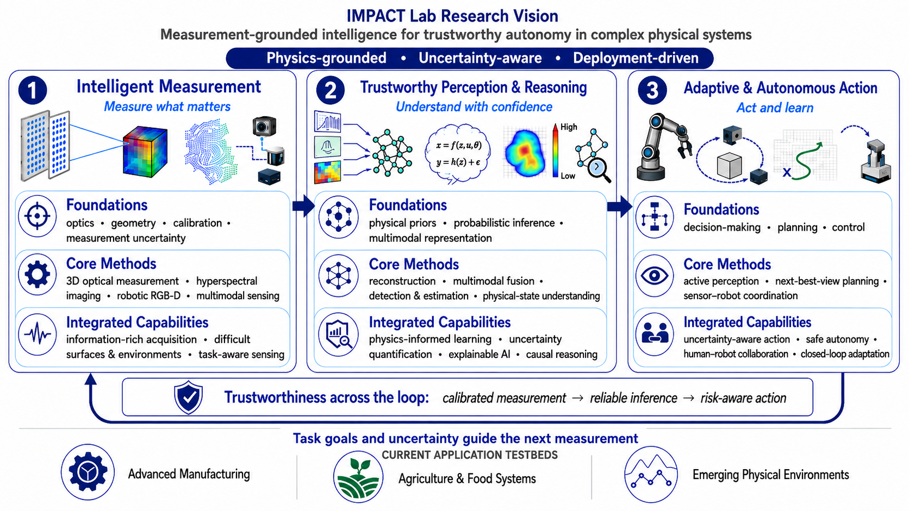
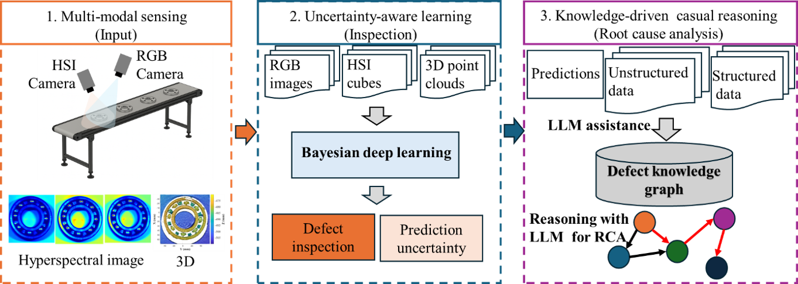
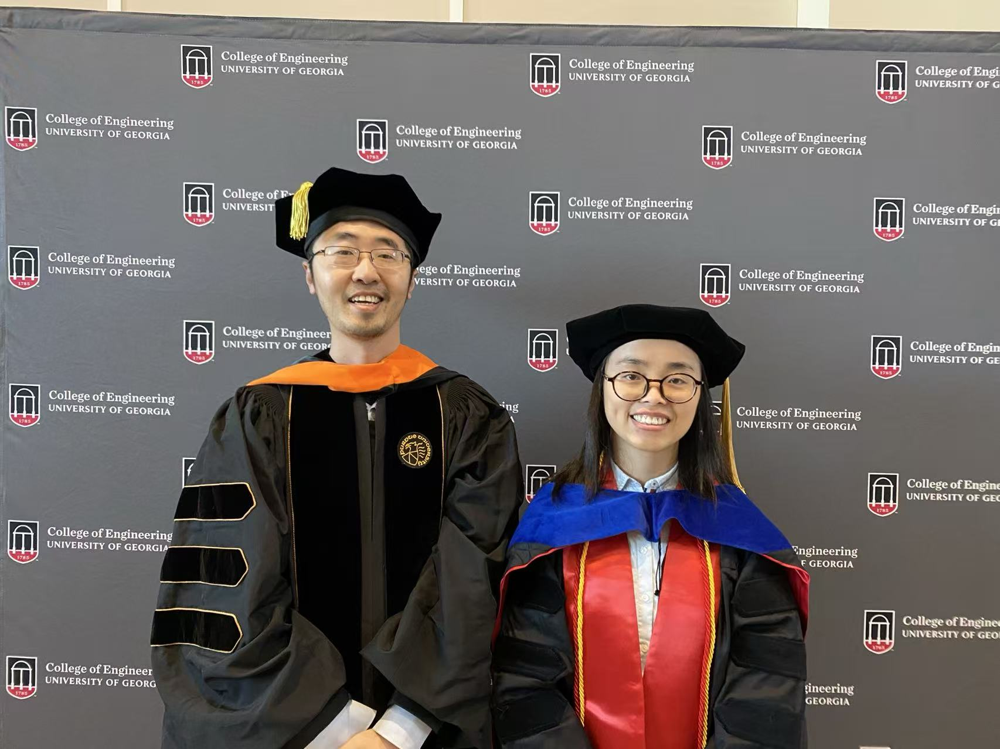
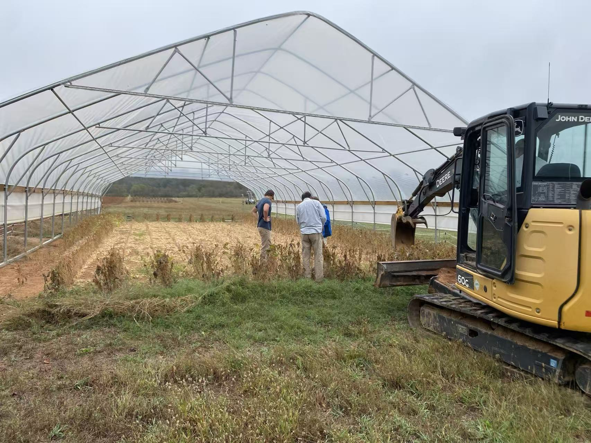
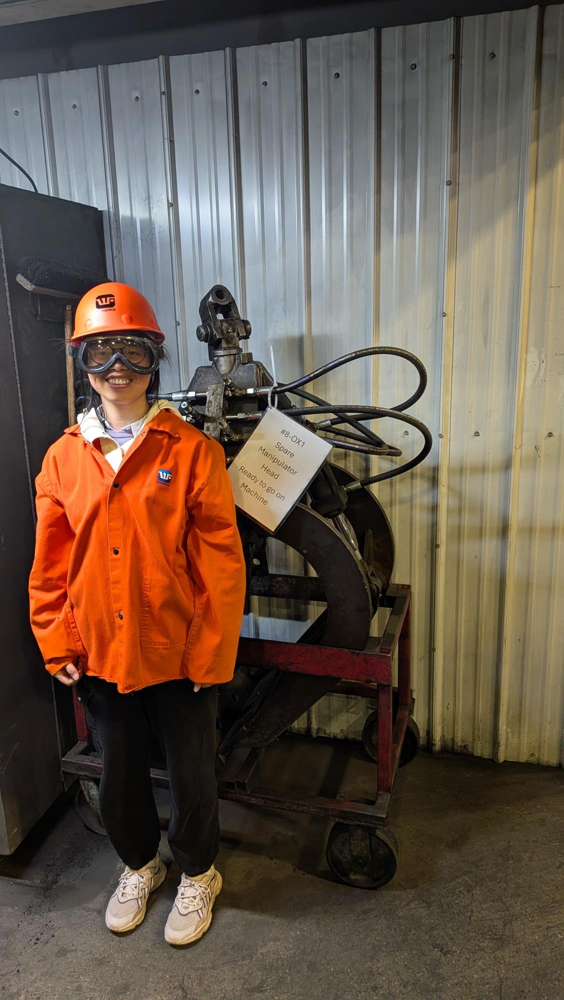
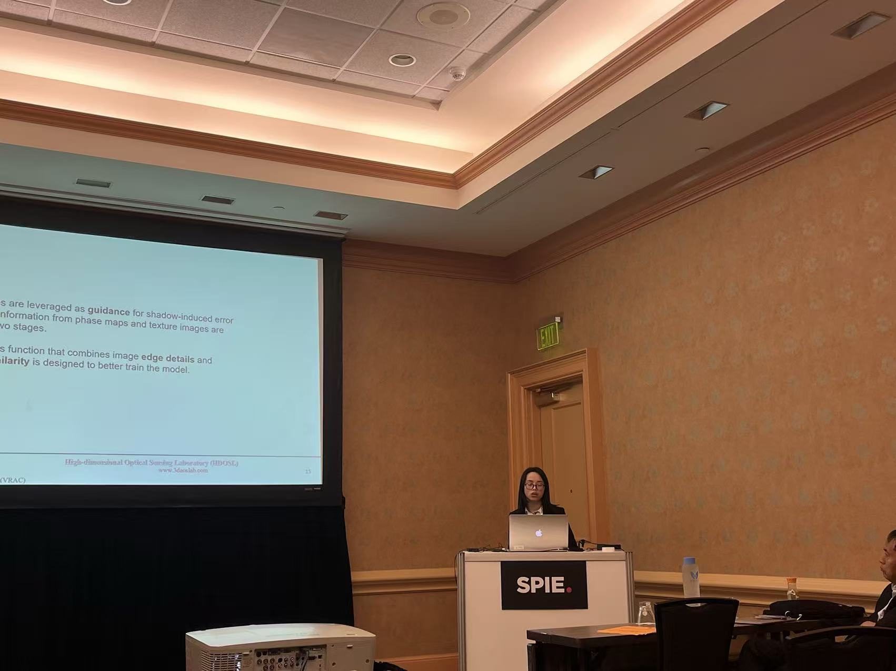
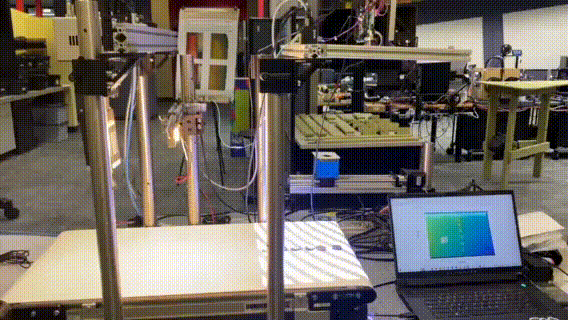

Intelligent Measurement, Perception & Action (IMPACT) Lab
Department of Mechanical Engineering,
California State University, Fresno
Mission
The IMPACT Lab integrates research, education, and deployment to advance intelligent measurement, trustworthy perception, and autonomous systems. We create new knowledge and technologies, educate engineers through hands-on research, and translate innovations into real-world impact. Deployment challenges shape our research, research enriches education, and students drive the cycle forward.
News
- Aug 2026Dr.Jiaqiong Li joins Fresno State as Assistant Professor of Mechanical Engineering.
- Aug 2026Now recruiting: two funded research assistantships on our NSF ERI project; see Contact for details.
- Jun 2026NSF ERI grant awarded: "Bridging Sensing, Learning, and Reasoning for Trustworthy Manufacturing Defect Inspection" ($200,000, Award #2629316).
- Jan 2026WiSys Technology Foundation grant awarded for a proof-of-concept demonstration of cobot-assisted quality inspection for small manufacturers.
- 2025Dr. Li selected for the Rising Stars in Mechanical Engineering program at MIT.
Research
Measurement-grounded intelligence for trustworthy autonomy in complex physical systems
Research Vision
Our research follows the arc in our name: Intelligent Measurement, Perception & ACTion. Intelligent measurement grounds every decision in precise, physics-based sensing; trustworthy perception and reasoning turns those measurements into calibrated, uncertainty-aware inference; and adaptive action uses that understanding to direct robotic sensing and control to close the loop from measurement to action and back. Across all three, we are guided by the same principles: physics-grounded, uncertainty-aware, and deployment-driven.

Projects
Bridging Sensing, Learning, and Reasoning for Trustworthy Manufacturing Defect Inspection
NSF Engineering Research Initiation (ERI), Award #2629316 · $200,000 · 2026–2028 · PI: Jiaqiong Li
Three integrated thrusts: multi-modal sensing (color, hyperspectral, and 3D) to capture complementary defect attributes; uncertainty-aware learning for reliable in-situ inspection; and causal reasoning to trace defect patterns back to root causes in materials and processing.

Proof-of-Concept Demonstration of Cobot-Assisted Quality Inspection for Small Manufacturers
WiSys Technology Foundation · 2026 · PI: Jiaqiong Li
A hands-on demonstration bringing collaborative-robot inspection to small manufacturers: an eye-in-hand sensing cell that measures parts in place and flags quality issues, showing a practical, low-cost path to inspection automation.
Sponsors
Any opinions, findings, and conclusions expressed in this material are those of the author(s) and do not necessarily reflect the views of the funding agencies.
Publications
See Google Scholar for the complete, up-to-date list.
2026
Application-Driven Multi-Modal Depth Completion in Fringe Projection Profilometry
Badrinath Balasubramaniam, Vignesh Suresh, Yang Cheng, Jiaqiong Li, Beiwen Li · Optics and Lasers in Engineering, 200, 109587, 2026
2025
Three-Dimensional Phenotyping of Soybean Roots Under Different Water Treatment Conditions Using Fringe Projection
Victoria MacDans, Jiaqiong Li, Zhaodong Li, Beiwen Li · The Plant Phenome Journal, 8(1), e70055, 2025
Precision 3D Profilometry of Consumer-Grade Computer Enclosures Using High Dynamic Range Fringe Projection
Haiyang Zhao, Chang Liu, Badrinath Balasubramaniam, Jiaqiong Li, Jiahao Song, Xiaolong Liang, Minghui Zheng, Beiwen Li · Applied Optics, 64(30), 8986–8994, 2025
FDCGAN: A Frequency Domain Constrained Generative Adversarial Network for Overexposed Fringe Image Restoration
Yang Cheng, Jiaqiong Li, Badrinath Balasubramaniam, Beiwen Li · Optics Express, 33(17), 37106–37129, 2025
Four-Dimensional Hyperspectral Imaging for Fruit and Vegetable Grading
Laraib H. Naqvi, Badrinath Balasubramaniam, Jiaqiong Li, Lingling Liu, Beiwen Li · Agriculture, 15(15), 2025
Unsupervised Image-Based Classification of Corrosion Severity in Automobile Engine Connecting Rods
Badrinath Balasubramaniam, S. Anush Lakshman, Jiaqiong Li, Fatemeh Delzendehrooy, Yabin Liao, Beiwen Li · Journal of Nondestructive Evaluation, Diagnostics and Prognostics of Engineering Systems, 8(4), 041008, 2025
Line-Scan Hyperspectral 4D Imaging Across Visible to Shortwave Infrared Spectral Range
Jiaqiong Li, Beiwen Li · Proc. SPIE 13462, Dimensional Optical Metrology and Inspection for Practical Applications XIV, 2025
2024
4D Vis-SWIR Line-Scan Hyperspectral Imaging
Comparative Analysis of Circular and Linear Fringe Projection Profilometry: From Calibration to 3D Reconstruction
2023
TPDnet: Texture-Guided Phase-to-Depth Networks to Repair Shadow-Induced Errors for Fringe Projection Profilometry
3D Imaging with Fringe Projection for Food and Agricultural Applications — A Tutorial
Tracking and Visualization of Benchtop Assembly Components Using an RGBD Camera
2022
Single-Camera Line-Scan Hyperspectral 4D Imaging Based on Fringe Projection
2021
4D Line-Scan Hyperspectral Imaging
Teaching
Courses taught by Dr. Li.
| Course | Title | Role | Institution | Term |
|---|
| ME 112 | Engineering Mechanics: Dynamics | Instructor | California State University, Fresno | Fall 2026 |
| ME 125 | Engineering Statistics & Experimentation | Instructor | California State University, Fresno | Fall 2026 |
| ME 162 | Computer-Aided Design | Instructor | California State University, Fresno | Fall 2026 |
| EGR 309 | Kinematics & Dynamics of Machinery | Instructor | UW Oshkosh | Spring 2026 |
| EGR 326 | Control Systems | Instructor | UW Oshkosh | Spring 2026 |
| EGRT 118 | Fluid Control | Instructor | UW Oshkosh | Spring 2026 |
| EGR 110 | Engineering Graphics | Instructor | UW Oshkosh | Fall 2025 |
| EGRT 240 | Logic & Control Devices | Instructor | UW Oshkosh | Fall 2025 |
| EGRT 260 | Automation Controllers | Instructor | UW Oshkosh | Fall 2025 |
| ENGR 2130 | Dynamics | Substitute Instructor | University of Georgia | Fall 2024 |
| ME 4360 | Heat Transfer | Teaching Assistant | Iowa State University | Spring & Summer 2021 |
Team
Principal investigator and lab members
Jiaqiong (Joan) Li, Ph.D.
Assistant Professor, Principal Investigator
Dr. Li's research spans intelligent measurement, AI-enhanced perception, and perception-to-action autonomy, integrating 3D optical metrology, hyperspectral imaging, and robotic systems to enable trustworthy automation in complex, real-world environments.
Dr. Li received her Ph.D. in Mechanical Engineering from the University of Georgia (2024), her M.S. from Shanghai Jiao Tong University, and her B.S. from the University of Electronic Science and Technology of China.
Prior to joining Fresno State, she was an Assistant Professor at the University of Wisconsin Oshkosh.
She was selected for MIT's Rising Stars in Mechanical Engineering program (2025).
Google Scholar
Personal Site
GitHub
LinkedIn
ORCID
Graduate Students
Two funded student research assistant positions are currently open; see Openings.
Lab Life





Prospective Members
We welcome M.S. students, undergraduate researchers, and senior-project teams. Fresno State students: come talk to us about funded and for-credit research opportunities.
Equipment & Facilities
The IMPACT Lab is located in EW 113 at the Lyles College of Engineering, California State University, Fresno.
Hyperspectral Imaging System
GoldenEye™ snapshot hyperspectral imaging system covering 400–1000 nm with a native spatial resolution of 648 × 488 pixels. The system supports material-sensitive inspection, spectral anomaly detection, and multimodal defect characterization.
Fringe Projection Profilometry System
Hardware-synchronized DLP projection and imaging system for high-precision, full-field 3D surface measurement. It supports dimensional inspection, complex-surface reconstruction, and RGB–spectral–3D data fusion.
Robots
Unitree Z1 robotic arm integrated with vision and optical sensors for autonomous sensing and manipulation. The platform supports robotic inspection, adaptive viewpoint planning, and closed-loop perception-to-action research.
Deep Learning Workstations
GPU-accelerated platform for training, fine-tuning, and deploying computer-vision and multimodal AI models, including hyperspectral analysis, uncertainty-aware learning, and digital-twin workflows.
Researchers, students, and industry partners (especially local SMEs) interested in our equipment or in collaborative inspection projects are welcome to contact us.
Contact
Prospective students, collaborators, and industry partners are all welcome.
Openings: Two Funded Research Assistantships
The IMPACT Lab is recruiting two research assistants to work on the National Science Foundation Engineering Research Initiation (ERI) project, "Bridging Sensing, Learning, and Reasoning for Trustworthy Manufacturing Defect Inspection" (Award #2629316, 2026–2028).
Position 1: Multimodal Sensing, 3D Reconstruction & Dataset Development
This position focuses on developing and validating the project's multimodal imaging system and constructing a fully registered RGB–hyperspectral–3D defect dataset.
- Integrate and calibrate a high-resolution RGB camera and a snapshot hyperspectral camera in a rigid stereo configuration
- Develop RGB-guided hyperspectral super-resolution, denoising, cross-modal registration, and stereo depth-estimation methods
- Generate spatially aligned RGB images, hyperspectral cubes, depth maps, and 3D point clouds of metal industrial components
- Design experiments for defects such as corrosion, cracks, pits, inclusions, lubricant contamination, and coating delamination
- Support data acquisition, pixel-level annotation, quality assessment, and release of a benchmark multimodal defect dataset
Position 2: Trustworthy Multimodal AI & Causal Reasoning
This position focuses on developing reliable defect-inspection models that quantify predictive uncertainty and connect detected defects to plausible root causes.
- Develop deep-learning encoders and cross-modal fusion methods for RGB, hyperspectral, and 3D point-cloud data
- Model epistemic and aleatoric uncertainty using Bayesian deep learning, Monte Carlo dropout, variational inference, and heteroscedastic learning
- Evaluate prediction calibration, out-of-distribution detection, robustness, and domain generalization under variable manufacturing conditions
- Construct manufacturing knowledge graphs from inspection records, sensor logs, maintenance documents, and technician narratives
- Explore lightweight large language models for knowledge extraction, multi-hop causal reasoning, and interpretable root-cause analysis
Who Can Apply
Applicants should be current or incoming Fresno State students in Mechanical Engineering, Electrical and Computer Engineering, Computer Science, Industrial Technology, or a closely related field. M.S. students are preferred, although qualified undergraduate researchers may also be considered.
Prior research experience is not required. Depending on the position, useful preparation includes Python, MATLAB, PyTorch, computer vision, image processing, hyperspectral imaging, 3D geometry, machine learning, natural-language processing, or knowledge graphs. Curiosity, consistency, and a willingness to learn across disciplinary boundaries are especially important.
How to Apply
Email Dr. Li at jiaqiongli@mail.fresnostate.edu with (1) your CV or résumé, (2) an unofficial transcript, and (3) a brief statement describing your research interests, relevant experience, and preferred position. Use the subject line "IMPACT Lab Research Assistant Application".